Presentación
¿quienes somos?
- ¿Qué hacemos acá?

- venimos a RADEAR!
- Antes de conocer al equipo...
- presentamos El jurado
Nos presentamos
el equipo
Casi Ingenieros
-

Ale Prieto

Cele Weidmann
Equipo
Tras bambalinas
El Director
-

Raúl Tschanz
Equipo
Tras bambalinas
El Cliente
-

Tere Sempere
Equipo
Tras bambalinas
La diseñadora
-

Juli Weidmann
La historia
del radar
contada en actos...
Primer acto
-
Ale va al teatro
-
#fail
Segundo acto
-
Ale va al cine
-
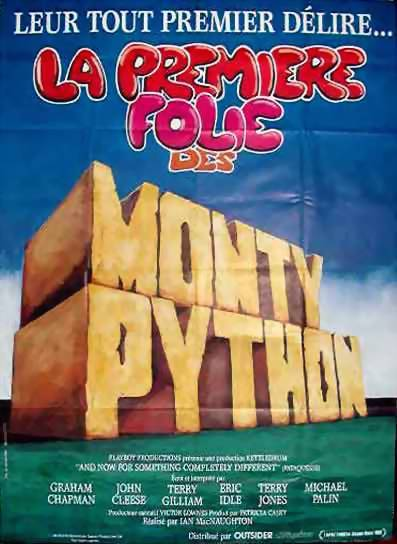

Nada que ver con programación
Los Monty Python

- 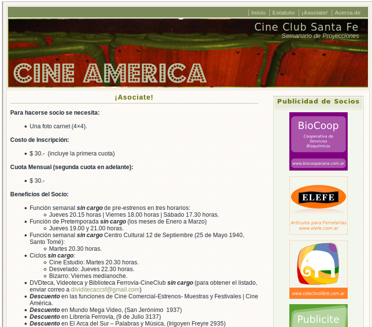
De cómo se conoció el equipo...
- Conectividad
- Investigaciones
- el Software Libre
- la Cultura Libre
- la cooperativa
La Cooperativa
- 3 años de trabajo
- proyectos divertidos
- amigos
- más de un radar
- muchas jornadas
- => la jornada
El contacto
con el cliente
La tere
-

radar cultural
antes de ser radar
- 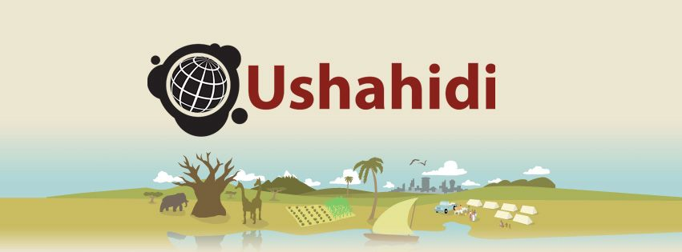
-
plataforma para mapear información vital en zonas de catástrofe o de conflicto.
Creada en Kenia para recibir denuncias de violencia durante la crisis postelectoral de 2008.
Ushahidi ("testimonio" o "testigo" en swahili). swahili lengua africana
mapa de conflictos 2008 - Kenia
Ushahidi y Kohana
- Proyecto iniciado y equipo diverso
-

Leo Arias - el servidor

Iván Qart - los plugins

Taringa - el dominio
- el merge no funcionó...
MST
nuestro proyecto anterior
"Sistema de Información de Gestión de Contenidos Educativos Multimedia sobre Redes MAN"
si, las redes MAN existen
-

experiencia
aprendizaje
loops
la OVNIdireccional
antenas apuntando a ARSAT-1
aceptando el cambio
teníamos...
-

RADAR
un proyecto sin equipo

MST
un equipo sin proyecto
Radar Cultural
veamos como funciona
www.radarcultural.org
-
así no.
-
Espacios
*Listados según categorías seleccionadas
*visualizados según recorte del mapa
¿Como se hizo?
el marco de trabajo :: Scrum
[+] cliente in-situ virtual
- [+] Roles: Product Owner=Tere, Scrum Master=Ale, desarrollo=Ale y Cele
- [+] Reuniones: diarias, semanales, mensuales (on line)
- [+] Documentos: Product Backlog, Sprint Backlog
Trello
Administrador de tareas
- 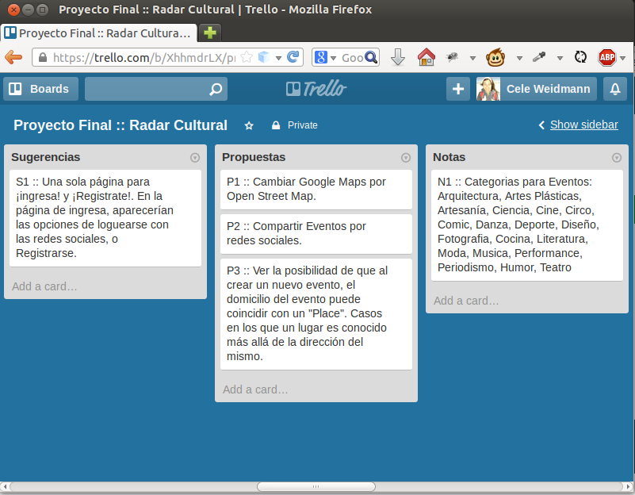
-
herramienta compartida
por todo el equipo -
cualquiera puede
agregar sugerencias,
propuestas y notas
Trello
Administrador de tareas
- 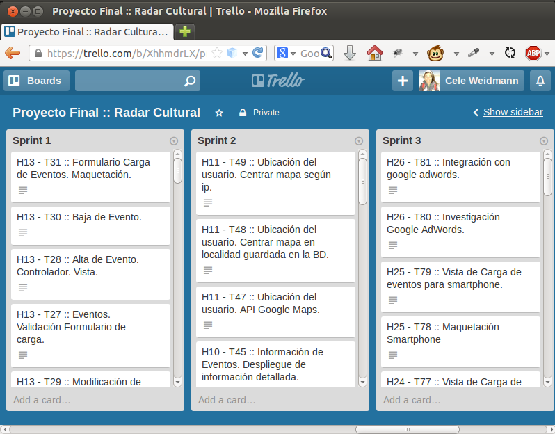
-
H13, H11, H25
historias de cliente -
T30, T28, T47
tareas de cada historia
Git
control de versiones
git y github
-
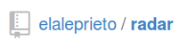
el proyecto
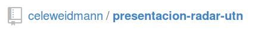la presentación
Momento Nerd
tecnologías
la base del proyecto
-
Apache
PHP
MySQL
MVC
en todas partes
- MVC en el Servidor
-

-
- Framework PHP
- procesamiento en el servidor
- MVC en el Cliente
- 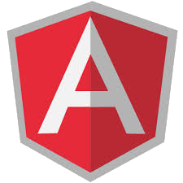
-
- Framework javascript
- procesamiento en el cliente
- menos peticiones de red
las APIs
con las que se relaciona radar
- API de google
- API de facebook
- API de twitter
- 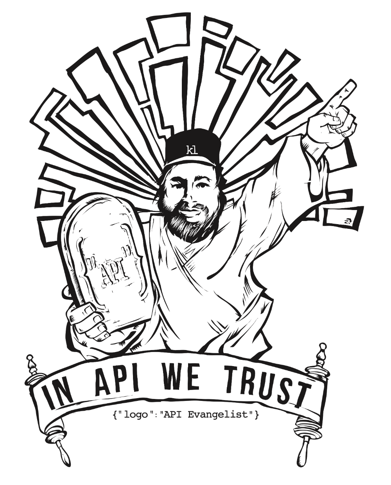
- nuestra propia API
Como Seguimos...
El radar
¿como se financió?
-
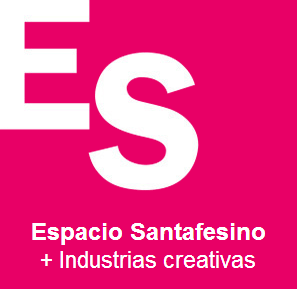
Espacio Santafesino
Capital Semilla
¿Cómo seguimos?
el Radar
lo que falta
-
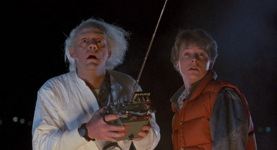
si, todavía falta...
-
aplicación Android
-
Gestión de Auspiciantes
-
Difusión
¿Cómo seguimos?
nosotros...
-
relajados
muy relajados
-
un peso menos en la mochila de la vida
-
con una pregunta menos los domingos
-
¿nos vamos a festejar?